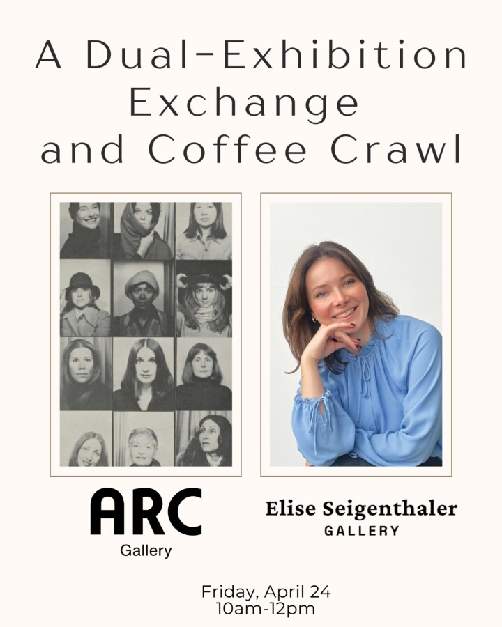

DUAL-EXHIBITION EXCHANGE: ARC GALLERY & ELISE SEIGENTHALER GALLERY
ARC Gallery and Elise Seigenthaler Gallery are pleased to invite you to a co-programmed exhibition coffee crawl placing their current group exhibitions—The Given Distance (ARC Gallery) and Before We Knew Better (Elise Seigenthaler Gallery)—in direct dialogue about humanity’s enduring relationship with the natural world and the inherent barrier that artists face in fully communicating their internal experience to others.
In their own distinct ways, and through a range of mediums, both of these exhibitions seek to close the gap between the real and imagined. Furthermore, the galleries themselves bridge a robust history of women-run galleries in Chicago; the eponymous Elise Seigenthaler Gallery is the newest woman-run gallery to open in Chicago, and ARC is one of the longest-operating women’s cooperative galleries in the country. Seigenthaler’s programmatic mission to create more space for Chicago-based and otherwise underrepresented artists echoes the pioneering spirit that in 1973 inspired ARC’s founding members to create their own opportunities within an exclusionary industry. Over the years, ARC has expanded its exhibition programming to support exhibitions that integrate the work of ARC Member artists and emerging to mid-career artists from Chicago and beyond.
With more than 50 years spanning their respective openings, and as evidenced by their respective programming, both galleries—located less than half a mile apart in West Town’s gallery district—demonstrate an ongoing commitment to Chicago’s illustrious history platforming Chicago artists of all origins and backgrounds.
The coffee crawl will begin at the Elise Seigenthaler Gallery, where Seigenthaler will speak on her decision to open her own space in January of this year, and what can be anticipated of her exhibition programming moving forward. The group will then walk two blocks west on Chicago Avenue and arrive at ARC for a presentation by current ARC Member Raissa Bailey about the gallery’s history in Chicago and the gallery’s forthcoming Athena Fund Show: Reflections on Perception, featuring three solo exhibitions of work by the latest round of Athena Fund Awardees. ARC Gallery proudly awards fully funded Solo Exhibitions to multiple artists each year. These exhibitions are made possible by a generous grant from the Athena Foundation in support of making solo show opportunities accessible to a broader audience. Visual artists of all disciplines, ages and geographic locations are encouraged to apply. Bailey will be available to answer questions about how to apply for the next round of funding following her presentation.